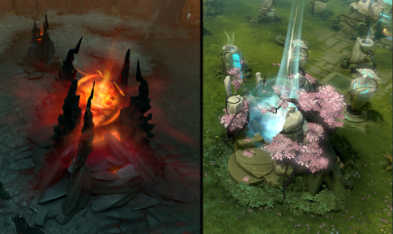
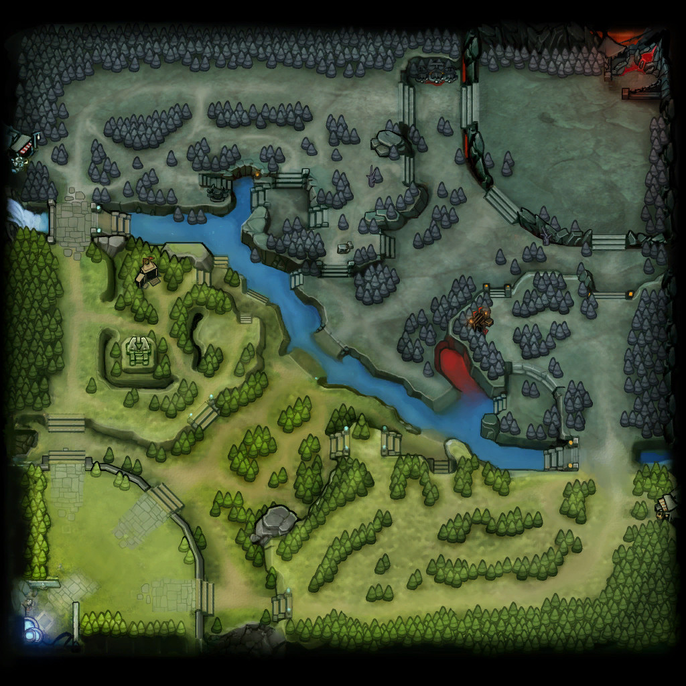
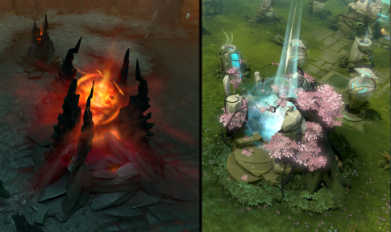
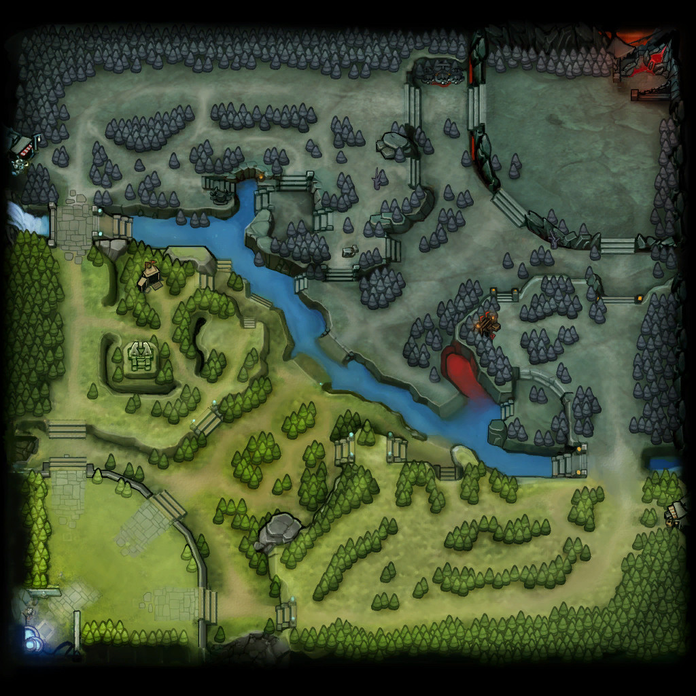

Game Mechanics
Doto 2 is a 5v5 multiplayer online battle arena (MOBA), over the course of each match you gradually grow in strength and build strategies until you've take down the enemy team’s Ancient.

To play the game, you can right click on any screen to move your characters and you can right click on the map too (map will be discussed later).
To attack the enemy's character you can right-click them, and to use a skill, you can click your character's skill image or use hotkeys (Q, W, E, R on default).
To combine attack with skill (skill attack) is pressing a skill first then aim at the enemy using right-click.
To win, you need a strategy. The strategy is important to gain an advantage for your team, you need to be reminded too that the enemy has their own strategy. So to win, you need a better strategy than them.

The Doto 2 Map have 2 sides, Radiant and Dire. Radiant is on the left (Bottom left on map) and Dire is on the right (Top Right on map).
Inside the map, you can right-click it to move your characters based on your click on the map, or you can ping (alert) by pressing Alt+Right Click on any side of the map.

To play the game, you can right click on any screen to move your characters and you can right click on the map too (map will be discussed later).
To attack the enemy's character you can right-click them, and to use a skill, you can click your character's skill image or use hotkeys (Q, W, E, R on default).
To combine attack with skill (skill attack) is pressing a skill first then aim at the enemy using right-click.
To win, you need a strategy. The strategy is important to gain an advantage for your team, you need to be reminded too that the enemy has their own strategy. So to win, you need a better strategy than them.
DOTO 2 MAP

The Doto 2 Map have 2 sides, Radiant and Dire. Radiant is on the left (Bottom left on map) and Dire is on the right (Top Right on map).
Inside the map, you can right-click it to move your characters based on your click on the map, or you can ping (alert) by pressing Alt+Right Click on any side of the map.